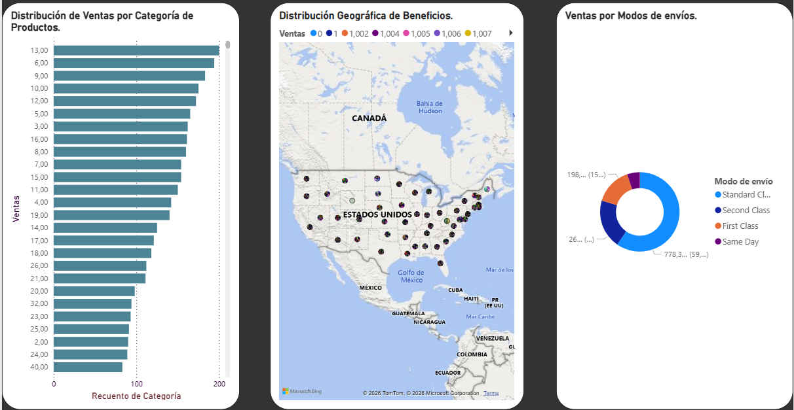

Visión Profesional
Analista de Operaciones con sólida formación financiera y experiencia internacional.
Data & BI
SQL, Power Query, DAX
Finance
SAP, Nubox, Nóminas
AI & Auto
Prompts, Python inicial
Consulting
CRM Beyond Up, B2B
Prueba de Trabajo (Portafolio)

Business Intelligence Dashboard
Integración visual de los datos procesados en SQL. Este panel permite filtrar por categoría y región.
- Limpieza con Power Query
- Modelado Relacional
Consultas y Gestión de Datos en MySQL
Estructuración de datos logísticos y cálculos de rentabilidad.
Experiencia Profesional
Business Solutions Analyst | Gestión de Nómina & SAP
Constructora Continental Johan Barrera y Asociados (Chile)
- Registro y análisis del ciclo contable en ERP SAP.
- Gestión de ciclos de nómina y conciliaciones bancarias.
Analista de Procesos & CRM Beyond Up
Ene 2020 – Ene 2021Pacifico Cable SPA (Chile)
Gestión y limpieza de bases en Excel/Sheets. Análisis de KPIs.
Eficiencia reportes +40% | Productividad +28%
TXT Logística (España)
Jun 2025 – Sep 2025
Control de incidencias y optimización de flujo operativo.
Amazon Road Spain
Oct 2025 – Ene 2026
Gestión de flujos logísticos con WMS. Precisión de inventario 98%.
Especialista Contable | ERP NUBOX
Pintuvial C.A. (Venezuela)
Análisis de datos contables y gestión de nóminas multimoneda. Automatización de reportes administrativos.
- Ciclo contable y conciliaciones.
- Optimización de procesos con Excel.
$2.5M USD
Licitaciones gestionadas
Cero observaciones Auditoría
Educación y Formación
IA Generativa y Mejora de la Productividad
Grupo Piquer, INAEM (2026)
Grado en Ciencias Económicas y Contables (Formación Internacional)
Universidad de Carabobo (2014)
Gestión de Almacenes (Nivel 3)
ACF Innove, INAEM (2025)
Técnico en Informática
Formación Técnica Profesional (2007)